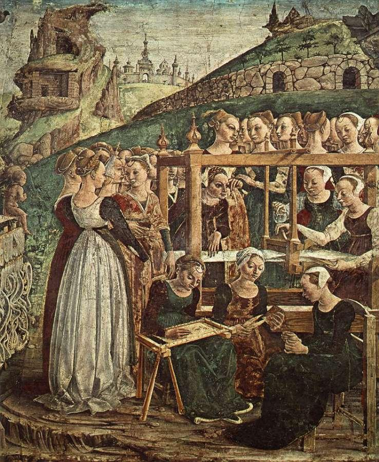
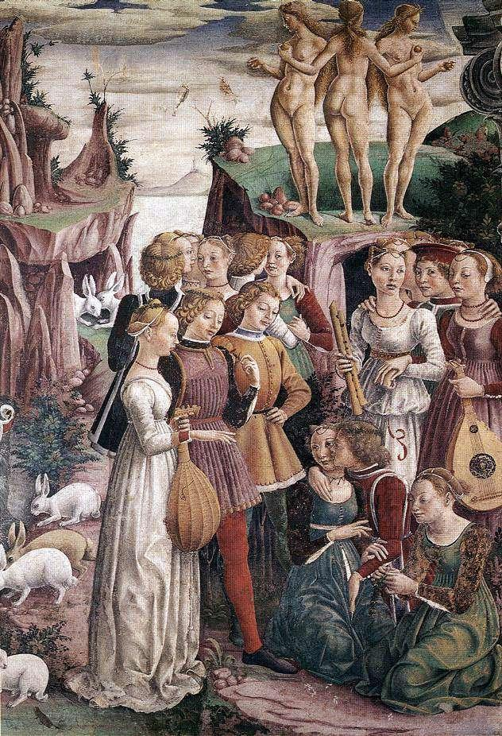
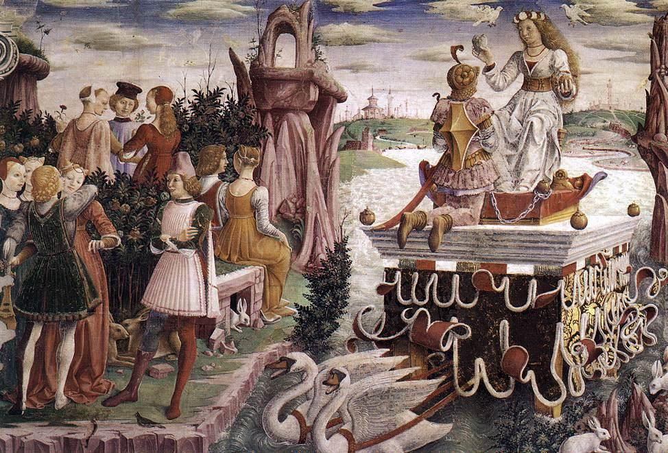

Listen to 'Schifanoia' in English


Copyright Michel Galiana 01.04.2006 (c) (r) All rights reserved |
Transl. Christian Souchon 01.04.2006 - 2026 (c) (r) All rights reserved |

Note :
|
Le Cycle des mois du Palais Schifanoia ("Qui répugne à l'ennui") à Ferrare fut peint par les meilleurs artistes de cette ville en 1470, pour célébrer la prochaine investiture du duc de Modène et Reggio, Borso d'Este, comme Duc de Ferrare. Il occupe les 4 murs de la salle (Salone dei Mesi) et présente pour chaque mois, trois peintures "a fresco" ou "a secco" représentant de haut en bas, le triomphe d'un dieu ; un signe zodiacal accompagné de trois personnages, les "décans", sur la bande centrale; une scène de la vie et du gouvernement de Borso d'Este faisant ressortir la prospérité que les Ferrarais pouvaient attendre de son règne: un véritable âge d'or. Seules 7 des 12 scènes (mars à septembre) restent lisibles après la restauration de l'oeuvre en 1820-1840. Outre le message politique, elles célèbrent le caractère sacré de l'ordre cosmique et des tâches humaines qu'il régit. Le poème de Michel a trait, semble-t-il, à plusieurs tableaux à la fois, exécutés par le peintre Francesco Del Cossa: Le poème se concentre sur le registre supérieur, où les fileuses — fileuses du destin — fixent les ombres humaines à leurs fuseaux. Ces femmes, héritières des Parques antiques et de l’iconographie astrologique, déterminent le cours de la vie humaine en en filant le fil. Pourtant, leurs gestes n’interrompent pas la mécanique cosmique. 1. Les fileuses et l’impuissance de l’action humaine « Vous fixez aux fuseaux nos ombres, fileuses, / Mais n’interrompez point la course d’Apollon. » Les fileuses attachent nos ombres — nos destins — à leurs fuseaux, mais elles ne peuvent arrêter le char d’Apollon. Le destin humain se tisse, mais l’ordre cosmique demeure intact. Sur la fresque, les dieux trônant dans la partie supérieure restent indifférents aux scènes humaines qui se déroulent en bas. Galiana saisit cette hiérarchie : les fileuses sont à l’ouvrage, mais le soleil poursuit sa course. 2. Le fleuve du temps et l’immobilité inaccessible « Et n’immobilisez le fleuve… / D’une immobilité que n’atteint la prière. » Le fleuve du temps s’écoule au rythme des astres, des saisons et des heures. Rien — pas même la prière — ne peut atteindre l’immobilité qui le régit. Le registre supérieur de la fresque est hors du temps, figé dans une éternité symbolique, tandis que le registre inférieur montre le labeur et les plaisirs des hommes. L’« immobilité » évoquée par Galiana correspond au calme métaphysique de la fresque, inaccessible aux supplications humaines. 3. Couronnes infinies et faim du désir « Ronde, tourne, joyaux des couronnes sans fin. / Étincelez où le désir connaît sa faim. » Les couronnes du zodiaque tournent sans fin. Leurs joyaux scintillent là où le désir rencontre sa faim — un vers saisissant qui évoque la sensualité de la fresque. Les mois du printemps (mars, avril, mai) sont empreints de musique, de danse et de résonances érotiques. Galiana voit dans ces joyaux l'éternel retour du désir humain, inscrit dans l'ordre cosmique. 4. La mort interdite — et la « treizième » de Nerval « La cinquième à chanter habitera la bière. » Ce vers marque une rupture. Dans les fresques du Schifanoia, la mort est absente — non par hasard, mais par décret : Borso d’Este avait explicitement interdit à Francesco del Cossa de représenter la mort dans ce cycle. Les mois doivent célébrer le renouveau, le plaisir et l’harmonie cosmique ; la mortalité n’a pas sa place dans le programme ducal. Le dernier vers de Galiana réintroduit l’élément interdit. La cinquième chanteuse — l’une des jeunes femmes du registre inférieur — « habitera la bière ». La mort revient par la poésie là où la peinture l’avait bannie. Ce geste résonne puissamment avec *Artémis* de Nerval (« La treizième revient… »), où la « treizième heure » incarne l’interdit, l’irreprésentable, l’instant hors du cycle établi. La treizième heure nervalienne est celle de la rupture, de la révélation et de l’irruption de la mort dans le temps ordonné. Galiana accomplit un geste similaire : la fresque dépeint douze mois éternellement renouvelés ; Michel y ajoute une note « treizième » — la mort — ce que le peintre avait interdiction de montrer. Ainsi, le poème devient une correction nervalienne apportée à la fresque : le cycle n’est pas complet sans son ombre. |
The Cycle of the Months of Palazzo Schifanoia ("Dodge-Boredom") in Ferrara was painted by the best artists of that city in 1470, to celebrate the upcoming inauguration of the Duke of Modena and Reggio, Borso d'Este, as Duke of Ferrara. It occupies the 4 walls of the room (Salone dei Mesi) and presents for each month, three paintings "a fresco" or "a secco" representing from top to bottom, the triumph of a god; a zodiac sign accompanied by three characters, the "decans", on the central strip; a scene from the life and government of Borso d'Este highlighting the prosperity that the Ferrarese could expect from his reign: a true golden age. Only 7 of the 12 scenes (March to September) remain legible after the restoration of the work in 1820-1840. In addition to the political message, they celebrate the sacred character of the cosmic order and the human tasks it governs. Michel's poem relates to several paintings at once, executed by Francesco Del Cossa: The poem focuses on the upper tier, where the filandières — spinners of destiny — fix human shadows to their spindles. These women, derived from classical Parcae and astrological iconography, determine the course of human life by spinning its thread. Yet their gestures do not interrupt the cosmic machinery. 1. The spinners and the impotence of human agency “Vous fixez aux fuseaux nos ombres, filandières, / Mais n’interrompez point la course d’Apollon.” The spinners attach our shadows — our destinies — to their spindles, but they cannot halt Apollo’s chariot. Human fate is woven, but cosmic order remains untouched. In the fresco, the gods enthroned above remain unmoved by the human scenes below. Galiana captures this hierarchy: the spinners work, but the sun continues its course. 2. The river of time and the unreachable stillness “Et n’immobilisez le fleuve… / D’une immobilité que n’atteint la prière.” The river of time flows according to stars, seasons, and hours. Nothing — not even prayer — can reach the stillness that governs it. The fresco’s upper tier is timeless, frozen in symbolic eternity, while the lower tier shows human labour and pleasure. Galiana’s “immobilité” is the fresco’s metaphysical calm, unreachable by human supplication. 3. Endless crowns and the hunger of desire “Ronde, tourne, joyaux des couronnes sans fin. / Étincelez où le désir connaît sa faim.” The crowns of the zodiac rotate endlessly. Their jewels sparkle where desire meets its hunger — a striking line that evokes the fresco’s sensuality. The months of spring (March, April, May) are filled with music, dance, and erotic undertones. Galiana sees in these jewels the eternal recurrence of human longing, framed by cosmic order. 4. The forbidden death — and Nerval’s “thirteenth” “La cinquième à chanter habitera la bière.” This line introduces a rupture. In the Schifanoia frescoes, death is absent — not by accident, but by decree: Borso d’Este explicitly forbade Francesco del Cossa from depicting death in the cycle. The months must celebrate renewal, pleasure, and cosmic harmony; mortality has no place in the ducal program. Galiana’s final line reintroduces the forbidden element. The fifth singer — one of the young women in the lower register — will “inhabit the bier.” Death returns through poetry where painting had banished it. This gesture resonates strongly with Nerval’s Artémis (“La treizième revient…”), where the “thirteenth hour” is the forbidden, the unpaintable, the moment outside the sanctioned cycle. Nerval’s thirteenth hour is the hour of rupture, revelation, and death intruding upon ordered time. Galiana performs a similar act: the fresco shows twelve months, eternally renewed; Michel adds a “thirteenth” note — death — the one thing the painter was forbidden to show. Thus, the poem becomes a Nervalian correction to the fresco: the cycle is not complete without its shadow. |
Listen to 'Schifanoia' in English